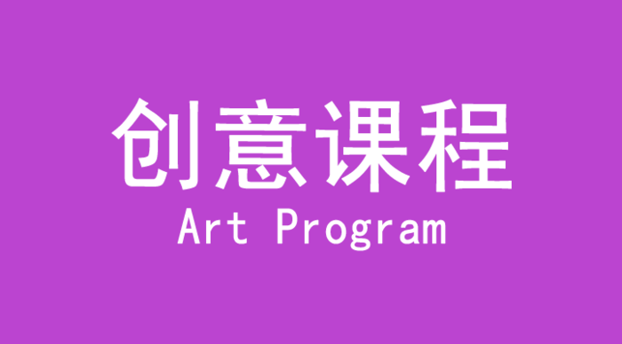

创意课程系列 Art Program
快乐手工、绘画、创意空间、宝贝厨房、太空之旅
LUCKYBABY幸运宝贝早教机构琳琅满目的创意、色彩、手工、厨艺以及小小设计师等课程，让宝宝在动手的过程中不断地去发现，去探索、去创造，尽情释放他们无穷无尽的想象力、创造力和自由发挥的能力。
【快乐手工】
当孩子正式加入我们的课程时，他们带回家的不仅仅是已经完成的作品。通过我们的课程训练，他们的创造精神得以不断增强，更学会如何积极主动地自我表达。
【绘画】
LUCKYBABY幸运宝贝早教机构丰富多彩的绘画内容（手指画、创意画、色彩画、水墨画、工艺画），让所有的孩子都沉浸其中······
【创意空间】
在LUCKYBABY幸运宝贝早教机构的创意空间里，每个宝宝都是魔术师、探险家。你会看到报纸水果在唱歌、小鱼游到了太空里······
【宝贝厨房】
LUCKYBABY幸运宝贝早教机构认为宝宝天生就是一个伟大的创造家，他们创造了每一个神奇和惊喜。有一天妈妈会发现宝宝对面粉，刀具，厨具，以 及蔬菜产生了浓厚的兴趣，喜欢切切吵吵，捏捏揉揉的动作，妈妈看似宝宝在搞破坏，其实不然，一个伟大的创想家已经诞生了，幸运宝贝的创意空间给宝宝提供了 非常自由和创意的空间，让宝宝自己烘烤饼干，神奇之处在于他们是不同形状的，也可以使宝宝自己发明的。宝宝可以将蔬菜和水果成为艺术殿堂里的精美艺术品， 稍微加一点作料，就变成了美味的餐点，面粉在我们成人看来只能是制作糕点使用的，而宝宝也可以用他来制作脸谱，制作餐点，制作艺术品，在未来的世界里我们 更加需求有创想能力的人才，幸运宝贝证实在为未来的宝宝提供了更好的学习和发展空间，让社会环境成为宝宝的乐园，让成人的厨房成为宝宝创意的世界，让宝宝 成为自己的主人，让宝宝在自由的世界里感受着幸福和快乐。
【太空之旅】
很多宝宝到了两岁以后特别喜欢问为什么，妈妈树叶为什么是绿色的呢？我是怎么生出来的呢？小鸡是鸡蛋生的吗？那为什么人不可以生活在天上呢？
那么多的为什么是因为宝宝天生就是一个探索未知世界的天才，他们天生具有好奇心和求知欲望，对于天上有什么，非常想知道。幸运宝贝的创意世界里 有一个神秘环节，那就是太空之旅，让宝宝自己做着太空飞船飞向太空。你可能都不相信，我们的太空是使用一次性纸盘制作的，银河是用遮光布制作的，星空是用 夜光贴创设的，立体的天体是用饮料瓶制作的。让宝宝坐在创意空间里就可以乘着诺亚方舟到星空探险，在一米见方的操作台上就可以进行星体的制作，在各种彩色 纸张上就可以变化出很多的星系，妈妈们，宝宝的每一次幻想都是一个神奇，每一次动手过程就是神奇的见证，带着您的宝宝一起来到运动宝宝创意世界里来吧，相 信一定会让您有很多的感触，原来宝宝的世界里有那么多的未知世界需要我们带他去发现。